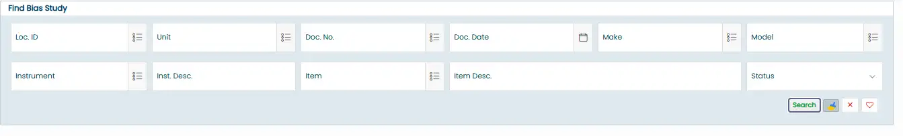
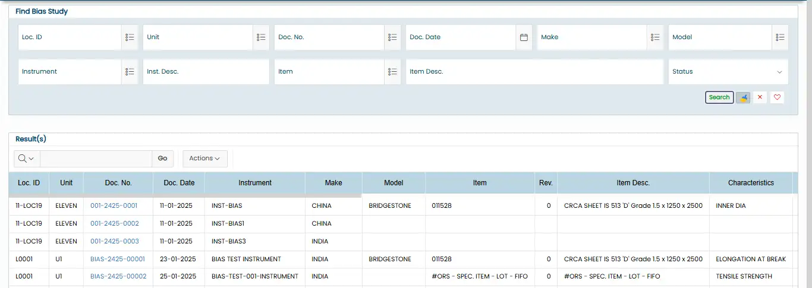
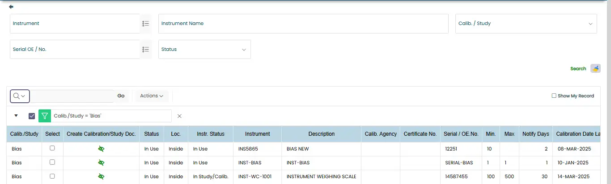
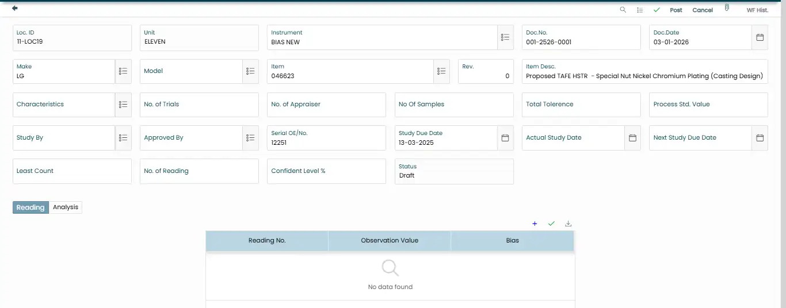

<div data-category="Quality control Management" data-title="Bias Study" data-updated="December 01, 2025" data-contributors="RoadmapIT" data-breadcrumb="Home,Quality control Management,Bias Study">
  <div class="page-content">
    <p>A bias study in quality management, as part of Measurement System Analysis, is conducted to measure the difference between the average observed value from a measurement system and the true or reference value. This difference is referred to as "bias." This screen is used to view documents that are listed for Bias Study.</p>

    <h5>Navigation Path</h5>
    <p class="fs-6">Quality Management \ Transaction \ Measurement System Analysis \ Bias Study</p>

    
    <ul style="list-style-type: none; align-content: center">
      <li class="mouse-icon">Search screen displays the list of Bias Study documents with the relevant details and status.</li>
      <li class="mouse-icon">User can filter the respective documents by entering the search parameters at the header.</li>
    </ul>

    
    <ul style="list-style-type: none; align-content: center">
      <li class="mouse-icon">On clicking search button, system displays results relevant to the search parameters entered.</li>
      <li class="mouse-icon">
        Using
        
        icon, entered search parameters can be cleared.
      </li>
      <li class="mouse-icon">
        To close the screen, use
        <i class="bi bi-x fs-4 mx-2 text-danger"></i>
        icon.
      </li>
      <li class="mouse-icon">To create a Bias Study document, go to pending screen in calibration and select the instrument.</li>
    </ul>

    
    <ul style="list-style-type: none; align-content: center">
      <li class="mouse-icon">
        Click on
        <i class="bi bi-check-lg fs-4 mx-1 text-success"></i>
        Create Calibration/Study Doc. button to create Bias Study document.
      </li>
      <li class="mouse-icon">Select the Rqst. Dept. Name.</li>
      <li class="mouse-icon">Select Calib. Rqst. Date.</li>
      <li class="mouse-icon">Click OK.</li>
    </ul>

    
    <ul style="list-style-type: none; align-content: center">
      <li class="mouse-icon">Select the Model.</li>
      <li class="mouse-icon">Select the Characteristics.</li>
      <li class="mouse-icon">Enter the Total Tolerance, Level, and Process Std. Value.</li>
      <li class="mouse-icon">Enter the No. of Readings.</li>
      <li class="mouse-icon">Enter the Least Count.</li>
      <li class="mouse-icon">Select the Actual Study Date.</li>
      <li class="mouse-icon">Select the Next Study Date.</li>
      <li class="mouse-icon">Enter the Confidence Level.</li>
      <li class="mouse-icon">
        Click the
        <i class="bi bi-plus fs-4 mx-2 text-primary"></i>
        button to add a new Reading.
      </li>
      <li class="mouse-icon">Enter Level.</li>
      <li class="mouse-icon">Enter Reading No.</li>
      <li class="mouse-icon">Enter Observation Value.</li>
      <li class="mouse-icon">Enter Bias.</li>
      <li class="mouse-icon">If required, enter analysis details in the Analysis tab.</li>
      <li class="mouse-icon">
        Click on
        <i class="bi bi-check-lg fs-4 mx-1 text-success"></i>
        to save.
      </li>
      <li class="mouse-icon">Click Post button to post the document.</li>
    </ul>
  </div>
</div>